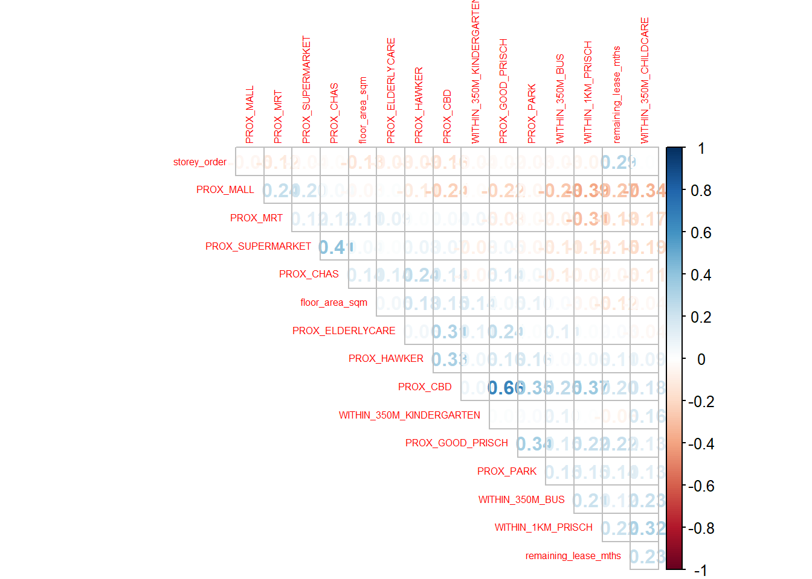

pacman::p_load(sf, spdep, GWmodel, SpatialML,
tmap, rsample, Metrics, tidyverse)Hands on Exercise 8
Part 1 : Read and Process Data
mdata <- read_rds("data/mdata.rds")Make train-test split
set.seed(1234)
## Remove duplicated data
mdata <- mdata %>%
distinct(st_coordinates(.), .keep_all = TRUE)
resale_split <- initial_split(mdata,
prop = 6.5/10,)
train_data <- training(resale_split)
test_data <- testing(resale_split)write_rds(train_data, "data/train_data.rds")
write_rds(test_data, "data/test_data.rds")Correlation matrix
mdata_nogeo <- mdata %>%
st_drop_geometry()
corrplot::corrplot(cor(mdata_nogeo[, 2:17]),
diag = FALSE,
order = "AOE",
tl.pos = "td",
tl.cex = 0.5,
method = "number",
type = "upper")
Re-read data
train_data <- read_rds("data/train_data.rds")
test_data <- read_rds("data/test_data.rds")Part 2 : Basic Linear Regression Model
price_mlr <- lm(resale_price ~ floor_area_sqm +
storey_order + remaining_lease_mths +
PROX_CBD + PROX_ELDERLYCARE + PROX_HAWKER +
PROX_MRT + PROX_PARK + PROX_MALL +
PROX_SUPERMARKET + WITHIN_350M_KINDERGARTEN +
WITHIN_350M_CHILDCARE + WITHIN_350M_BUS +
WITHIN_1KM_PRISCH,
data=train_data)
summary(price_mlr)
Call:
lm(formula = resale_price ~ floor_area_sqm + storey_order + remaining_lease_mths +
PROX_CBD + PROX_ELDERLYCARE + PROX_HAWKER + PROX_MRT + PROX_PARK +
PROX_MALL + PROX_SUPERMARKET + WITHIN_350M_KINDERGARTEN +
WITHIN_350M_CHILDCARE + WITHIN_350M_BUS + WITHIN_1KM_PRISCH,
data = train_data)
Residuals:
Min 1Q Median 3Q Max
-192261 -35863 -2390 31990 453834
Coefficients:
Estimate Std. Error t value Pr(>|t|)
(Intercept) 87504.481 16637.361 5.260 1.54e-07 ***
floor_area_sqm 3156.511 136.581 23.111 < 2e-16 ***
storey_order 14051.102 620.903 22.630 < 2e-16 ***
remaining_lease_mths 327.988 8.528 38.458 < 2e-16 ***
PROX_CBD -15673.691 317.565 -49.356 < 2e-16 ***
PROX_ELDERLYCARE -9810.575 1616.306 -6.070 1.43e-09 ***
PROX_HAWKER -20022.486 2002.227 -10.000 < 2e-16 ***
PROX_MRT -40376.482 2896.715 -13.939 < 2e-16 ***
PROX_PARK -11979.297 2525.996 -4.742 2.20e-06 ***
PROX_MALL -17617.639 3088.211 -5.705 1.27e-08 ***
PROX_SUPERMARKET -25243.771 6655.923 -3.793 0.000152 ***
WITHIN_350M_KINDERGARTEN 3470.799 992.747 3.496 0.000478 ***
WITHIN_350M_CHILDCARE -2472.370 564.758 -4.378 1.24e-05 ***
WITHIN_350M_BUS -153.649 367.966 -0.418 0.676295
WITHIN_1KM_PRISCH -9574.875 766.042 -12.499 < 2e-16 ***
---
Signif. codes: 0 '***' 0.001 '**' 0.01 '*' 0.05 '.' 0.1 ' ' 1
Residual standard error: 56440 on 3271 degrees of freedom
Multiple R-squared: 0.7339, Adjusted R-squared: 0.7328
F-statistic: 644.4 on 14 and 3271 DF, p-value: < 2.2e-16Part 3: Using gwr predictive method
train_data_sp <- as_Spatial(train_data)
train_data_spclass : SpatialPointsDataFrame
features : 3286
extent : 11597.31, 42523.18, 28217.39, 48741.06 (xmin, xmax, ymin, ymax)
crs : +proj=tmerc +lat_0=1.36666666666667 +lon_0=103.833333333333 +k=1 +x_0=28001.642 +y_0=38744.572 +ellps=WGS84 +towgs84=0,0,0,0,0,0,0 +units=m +no_defs
variables : 18
names : resale_price, floor_area_sqm, storey_order, remaining_lease_mths, PROX_CBD, PROX_ELDERLYCARE, PROX_HAWKER, PROX_MRT, PROX_PARK, PROX_GOOD_PRISCH, PROX_MALL, PROX_CHAS, PROX_SUPERMARKET, WITHIN_350M_KINDERGARTEN, WITHIN_350M_CHILDCARE, ...
min values : 230888, 74, 1, 546, 0.999393538715878, 1.98943787433087e-08, 0.0333358643817954, 0.043400974412627, 0.0502664084494264, 0.0652540365486641, 1.13983026324015e-06, 7.28527615277263e-09, 6.67273080236739e-07, 0, 0, ...
max values : 1088000, 138, 14, 1164, 19.4237844042343, 3.26361598929577, 2.86763031236184, 2.0902251353839, 2.41313695915468, 10.4013344251086, 2.27100643784442, 0.773905257672601, 1.36375821567757, 7, 20, ... Compute Adaptive bandwidth
bw_adaptive <- bw.gwr(resale_price ~ floor_area_sqm +
storey_order + remaining_lease_mths +
PROX_CBD + PROX_ELDERLYCARE + PROX_HAWKER +
PROX_MRT + PROX_PARK + PROX_MALL +
PROX_SUPERMARKET + WITHIN_350M_KINDERGARTEN +
WITHIN_350M_CHILDCARE +
WITHIN_1KM_PRISCH,
data=train_data_sp,
approach="CV",
kernel="gaussian",
adaptive=TRUE,
longlat=FALSE)Take a cup of tea and have a break, it will take a few minutes.
-----A kind suggestion from GWmodel development group
Adaptive bandwidth: 2038 CV score: 9.930103e+12
Adaptive bandwidth: 1268 CV score: 9.398633e+12
Adaptive bandwidth: 790 CV score: 8.589927e+12
Adaptive bandwidth: 497 CV score: 7.418024e+12
Adaptive bandwidth: 313 CV score: 6.139566e+12
Adaptive bandwidth: 202 CV score: 5.204821e+12
Adaptive bandwidth: 130 CV score: 4.543495e+12
Adaptive bandwidth: 89 CV score: 4.124259e+12
Adaptive bandwidth: 60 CV score: 3.790309e+12
Adaptive bandwidth: 46 CV score: 3.59201e+12
Adaptive bandwidth: 33 CV score: 3.431584e+12
Adaptive bandwidth: 29 CV score: 3.369236e+12
Adaptive bandwidth: 22 CV score: 3.30101e+12
Adaptive bandwidth: 22 CV score: 3.30101e+12 write_rds(bw_adaptive, "data/bw_adaptive.rds")Reusing the bw_adaptive, Make GWR
bw_adaptive <- read_rds("data/bw_adaptive.rds")gwr_adaptive <- gwr.basic(formula = resale_price ~
floor_area_sqm + storey_order +
remaining_lease_mths + PROX_CBD +
PROX_ELDERLYCARE + PROX_HAWKER +
PROX_MRT + PROX_PARK + PROX_MALL +
PROX_SUPERMARKET + WITHIN_350M_KINDERGARTEN +
WITHIN_350M_CHILDCARE +
WITHIN_1KM_PRISCH,
data=train_data_sp,
bw=bw_adaptive,
kernel = 'gaussian',
adaptive=TRUE,
longlat = FALSE)write_rds(gwr_adaptive, "data/gwr_adaptive.rds")Read GWR adaptive
gwr_adaptive <- read_rds("data/gwr_adaptive.rds")gwr_adaptive ***********************************************************************
* Package GWmodel *
***********************************************************************
Program starts at: 2024-10-20 21:31:56.095974
Call:
gwr.basic(formula = resale_price ~ floor_area_sqm + storey_order +
remaining_lease_mths + PROX_CBD + PROX_ELDERLYCARE + PROX_HAWKER +
PROX_MRT + PROX_PARK + PROX_MALL + PROX_SUPERMARKET + WITHIN_350M_KINDERGARTEN +
WITHIN_350M_CHILDCARE + WITHIN_1KM_PRISCH, data = train_data_sp,
bw = bw_adaptive, kernel = "gaussian", adaptive = TRUE, longlat = FALSE)
Dependent (y) variable: resale_price
Independent variables: floor_area_sqm storey_order remaining_lease_mths PROX_CBD PROX_ELDERLYCARE PROX_HAWKER PROX_MRT PROX_PARK PROX_MALL PROX_SUPERMARKET WITHIN_350M_KINDERGARTEN WITHIN_350M_CHILDCARE WITHIN_1KM_PRISCH
Number of data points: 3286
***********************************************************************
* Results of Global Regression *
***********************************************************************
Call:
lm(formula = formula, data = data)
Residuals:
Min 1Q Median 3Q Max
-191767 -35924 -2399 31994 454103
Coefficients:
Estimate Std. Error t value Pr(>|t|)
(Intercept) 86420.008 16431.324 5.259 1.54e-07 ***
floor_area_sqm 3157.057 136.557 23.119 < 2e-16 ***
storey_order 14050.370 620.823 22.632 < 2e-16 ***
remaining_lease_mths 327.972 8.527 38.462 < 2e-16 ***
PROX_CBD -15688.228 315.611 -49.707 < 2e-16 ***
PROX_ELDERLYCARE -9862.477 1611.317 -6.121 1.04e-09 ***
PROX_HAWKER -19953.076 1995.063 -10.001 < 2e-16 ***
PROX_MRT -40360.741 2896.104 -13.936 < 2e-16 ***
PROX_PARK -12074.176 2515.438 -4.800 1.66e-06 ***
PROX_MALL -17396.502 3042.079 -5.719 1.17e-08 ***
PROX_SUPERMARKET -25126.601 6649.166 -3.779 0.000160 ***
WITHIN_350M_KINDERGARTEN 3446.317 990.889 3.478 0.000512 ***
WITHIN_350M_CHILDCARE -2495.112 562.055 -4.439 9.32e-06 ***
WITHIN_1KM_PRISCH -9583.573 765.662 -12.517 < 2e-16 ***
---Significance stars
Signif. codes: 0 '***' 0.001 '**' 0.01 '*' 0.05 '.' 0.1 ' ' 1
Residual standard error: 56430 on 3272 degrees of freedom
Multiple R-squared: 0.7339
Adjusted R-squared: 0.7328
F-statistic: 694.1 on 13 and 3272 DF, p-value: < 2.2e-16
***Extra Diagnostic information
Residual sum of squares: 1.041939e+13
Sigma(hat): 56327.37
AIC: 81243.95
AICc: 81244.1
BIC: 78170.87
***********************************************************************
* Results of Geographically Weighted Regression *
***********************************************************************
*********************Model calibration information*********************
Kernel function: gaussian
Adaptive bandwidth: 22 (number of nearest neighbours)
Regression points: the same locations as observations are used.
Distance metric: Euclidean distance metric is used.
****************Summary of GWR coefficient estimates:******************
Min. 1st Qu. Median 3rd Qu.
Intercept -3247141.82 -256360.15 11113.90 307544.91
floor_area_sqm -3954.71 1429.90 2077.25 2897.86
storey_order 1790.04 7668.50 10441.61 14591.37
remaining_lease_mths -459.00 292.17 388.40 482.35
PROX_CBD -572134.25 -36757.15 -13146.60 6309.07
PROX_ELDERLYCARE -311463.55 -27059.28 2038.79 33213.78
PROX_HAWKER -2276998.10 -28208.83 4005.61 41157.23
PROX_MRT -1071133.09 -101736.36 -61930.04 -24477.62
PROX_PARK -519269.59 -30369.73 -1348.26 30252.05
PROX_MALL -555159.58 -49906.74 -17886.41 31077.14
PROX_SUPERMARKET -403291.40 -53224.56 -19076.70 23297.77
WITHIN_350M_KINDERGARTEN -32548.75 -4009.68 153.62 3845.13
WITHIN_350M_CHILDCARE -15061.85 -1650.80 453.80 3030.89
WITHIN_1KM_PRISCH -44766.18 -6142.64 -1072.20 4067.33
Max.
Intercept 9186124.99
floor_area_sqm 7578.73
storey_order 36377.83
remaining_lease_mths 747.64
PROX_CBD 235147.83
PROX_ELDERLYCARE 417902.06
PROX_HAWKER 837030.53
PROX_MRT 1903843.31
PROX_PARK 199854.60
PROX_MALL 624004.99
PROX_SUPERMARKET 426578.90
WITHIN_350M_KINDERGARTEN 29294.37
WITHIN_350M_CHILDCARE 16318.86
WITHIN_1KM_PRISCH 25622.77
************************Diagnostic information*************************
Number of data points: 3286
Effective number of parameters (2trace(S) - trace(S'S)): 991.8085
Effective degrees of freedom (n-2trace(S) + trace(S'S)): 2294.191
AICc (GWR book, Fotheringham, et al. 2002, p. 61, eq 2.33): 77441.83
AIC (GWR book, Fotheringham, et al. 2002,GWR p. 96, eq. 4.22): 76152.4
BIC (GWR book, Fotheringham, et al. 2002,GWR p. 61, eq. 2.34): 78459.1
Residual sum of squares: 1.756861e+12
R-square value: 0.9551288
Adjusted R-square value: 0.9357219
***********************************************************************
Program stops at: 2024-10-20 21:32:04.402907 Conduct GWR on test data
test_data_sp <- test_data %>%
as_Spatial()
test_data_spclass : SpatialPointsDataFrame
features : 1770
extent : 11824.29, 42623.63, 28287.8, 48635.08 (xmin, xmax, ymin, ymax)
crs : +proj=tmerc +lat_0=1.36666666666667 +lon_0=103.833333333333 +k=1 +x_0=28001.642 +y_0=38744.572 +ellps=WGS84 +towgs84=0,0,0,0,0,0,0 +units=m +no_defs
variables : 18
names : resale_price, floor_area_sqm, storey_order, remaining_lease_mths, PROX_CBD, PROX_ELDERLYCARE, PROX_HAWKER, PROX_MRT, PROX_PARK, PROX_GOOD_PRISCH, PROX_MALL, PROX_CHAS, PROX_SUPERMARKET, WITHIN_350M_KINDERGARTEN, WITHIN_350M_CHILDCARE, ...
min values : 240000, 74, 1, 555, 1.14923182318838, 9.26628957858198e-07, 0.046380672523336, 0.0220407324774434, 0.0441643212802781, 0.111583997308681, 0, 4.55547870890763e-09, 1.21715176356525e-07, 0, 0, ...
max values : 1050000, 133, 14, 1150, 19.6500691667807, 3.30163731686804, 2.62907660297845, 2.13060636038504, 2.38376543636855, 10.6223726149914, 2.25269448786787, 0.808332738794272, 1.57131703651196, 6, 16, ... gwr_bw_test_adaptive <- bw.gwr(resale_price ~ floor_area_sqm +
storey_order + remaining_lease_mths +
PROX_CBD + PROX_ELDERLYCARE + PROX_HAWKER +
PROX_MRT + PROX_PARK + PROX_MALL +
PROX_SUPERMARKET + WITHIN_350M_KINDERGARTEN +
WITHIN_350M_CHILDCARE +
WITHIN_1KM_PRISCH,
data=test_data_sp,
approach="CV",
kernel="gaussian",
adaptive=TRUE,
longlat=FALSE)Take a cup of tea and have a break, it will take a few minutes.
-----A kind suggestion from GWmodel development group
Adaptive bandwidth: 1101 CV score: 5.962459e+12
Adaptive bandwidth: 688 CV score: 5.596136e+12
Adaptive bandwidth: 432 CV score: 5.08012e+12
Adaptive bandwidth: 274 CV score: 4.475739e+12
Adaptive bandwidth: 176 CV score: 3.672364e+12
Adaptive bandwidth: 116 CV score: 3.108539e+12
Adaptive bandwidth: 78 CV score: 2.69541e+12
Adaptive bandwidth: 55 CV score: 2.457459e+12
Adaptive bandwidth: 40 CV score: 2.232029e+12
Adaptive bandwidth: 31 CV score: 2.141079e+12
Adaptive bandwidth: 25 CV score: 2.143112e+12
Adaptive bandwidth: 34 CV score: 2.157494e+12
Adaptive bandwidth: 28 CV score: 2.136566e+12
Adaptive bandwidth: 27 CV score: 2.135811e+12
Adaptive bandwidth: 25 CV score: 2.143112e+12
Adaptive bandwidth: 26 CV score: 2.13803e+12
Adaptive bandwidth: 25 CV score: 2.143112e+12
Adaptive bandwidth: 25 CV score: 2.143112e+12
Adaptive bandwidth: 24 CV score: 2.14308e+12
Adaptive bandwidth: 24 CV score: 2.14308e+12
Adaptive bandwidth: 23 CV score: 2.144021e+12
Adaptive bandwidth: 23 CV score: 2.144021e+12
Adaptive bandwidth: 22 CV score: 2.156655e+12
Adaptive bandwidth: 22 CV score: 2.156655e+12
Adaptive bandwidth: 21 CV score: 2.155595e+12
Adaptive bandwidth: 21 CV score: 2.155595e+12
Adaptive bandwidth: 20 CV score: 2.167145e+12
Adaptive bandwidth: 20 CV score: 2.167145e+12
Adaptive bandwidth: 19 CV score: 2.173598e+12
Adaptive bandwidth: 19 CV score: 2.173598e+12
Adaptive bandwidth: 18 CV score: 2.184001e+12
Adaptive bandwidth: 18 CV score: 2.184001e+12
Adaptive bandwidth: 17 CV score: 2.213283e+12
Adaptive bandwidth: 17 CV score: 2.213283e+12
Adaptive bandwidth: 16 CV score: 2.226609e+12
Adaptive bandwidth: 16 CV score: 2.226609e+12 # gwr_pred <- gwr.predict(formula = resale_price ~
# floor_area_sqm + storey_order +
# remaining_lease_mths + PROX_CBD +
# PROX_ELDERLYCARE + PROX_HAWKER +
# PROX_MRT + PROX_PARK + PROX_MALL +
# PROX_SUPERMARKET + WITHIN_350M_KINDERGARTEN +
# WITHIN_350M_CHILDCARE +
# WITHIN_1KM_PRISCH,
# data=train_data_sp,
# predictdata = test_data_sp,
# bw=16,
# kernel = 'gaussian',
# adaptive=FALSE,
# longlat = FALSE)Part 4 : Preparing coordinates data
coords <- st_coordinates(mdata)
coords_train <- st_coordinates(train_data)
coords_test <- st_coordinates(test_data)coords_train <- write_rds(coords_train, "data/coords_train.rds" )
coords_test <- write_rds(coords_test, "data/coords_test.rds" )coords_train <- write_rds(coords_train, "data/coords_train.rds" )
coords_test <- write_rds(coords_test, "data/coords_test.rds" )train_data <- train_data %>%
st_drop_geometry()Part 5: Calibrating Random Forest Model
set.seed(1234)
rf <- ranger(resale_price ~ floor_area_sqm + storey_order +
remaining_lease_mths + PROX_CBD + PROX_ELDERLYCARE +
PROX_HAWKER + PROX_MRT + PROX_PARK + PROX_MALL +
PROX_SUPERMARKET + WITHIN_350M_KINDERGARTEN +
WITHIN_350M_CHILDCARE + WITHIN_350M_BUS +
WITHIN_1KM_PRISCH,
data=train_data)
rfRanger result
Call:
ranger(resale_price ~ floor_area_sqm + storey_order + remaining_lease_mths + PROX_CBD + PROX_ELDERLYCARE + PROX_HAWKER + PROX_MRT + PROX_PARK + PROX_MALL + PROX_SUPERMARKET + WITHIN_350M_KINDERGARTEN + WITHIN_350M_CHILDCARE + WITHIN_350M_BUS + WITHIN_1KM_PRISCH, data = train_data)
Type: Regression
Number of trees: 500
Sample size: 3286
Number of independent variables: 14
Mtry: 3
Target node size: 5
Variable importance mode: none
Splitrule: variance
OOB prediction error (MSE): 1519835433
R squared (OOB): 0.8724847 Save and Read model
write_rds(rf, "data/rf.rds")rf <- read_rds("data/rf.rds")
rfRanger result
Call:
ranger(resale_price ~ floor_area_sqm + storey_order + remaining_lease_mths + PROX_CBD + PROX_ELDERLYCARE + PROX_HAWKER + PROX_MRT + PROX_PARK + PROX_MALL + PROX_SUPERMARKET + WITHIN_350M_KINDERGARTEN + WITHIN_350M_CHILDCARE + WITHIN_350M_BUS + WITHIN_1KM_PRISCH, data = train_data)
Type: Regression
Number of trees: 500
Sample size: 3286
Number of independent variables: 14
Mtry: 3
Target node size: 5
Variable importance mode: none
Splitrule: variance
OOB prediction error (MSE): 1519835433
R squared (OOB): 0.8724847 Calibrating Geographical Random Forest Mode
Calibrate using Trainig Data
set.seed(1234)
gwRF_adaptive <- grf(formula = resale_price ~ floor_area_sqm + storey_order +
remaining_lease_mths + PROX_CBD + PROX_ELDERLYCARE +
PROX_HAWKER + PROX_MRT + PROX_PARK + PROX_MALL +
PROX_SUPERMARKET + WITHIN_350M_KINDERGARTEN +
WITHIN_350M_CHILDCARE + WITHIN_350M_BUS +
WITHIN_1KM_PRISCH,
dframe=train_data,
bw=55,
kernel="adaptive",
coords=coords_train)
Number of Observations: 3286Number of Independent Variables: 14Kernel: Adaptive
Neightbours: 55
--------------- Global ML Model Summary ---------------Ranger result
Call:
ranger(resale_price ~ floor_area_sqm + storey_order + remaining_lease_mths + PROX_CBD + PROX_ELDERLYCARE + PROX_HAWKER + PROX_MRT + PROX_PARK + PROX_MALL + PROX_SUPERMARKET + WITHIN_350M_KINDERGARTEN + WITHIN_350M_CHILDCARE + WITHIN_350M_BUS + WITHIN_1KM_PRISCH, data = train_data, num.trees = 500, mtry = 4, importance = "impurity", num.threads = NULL)
Type: Regression
Number of trees: 500
Sample size: 3286
Number of independent variables: 14
Mtry: 4
Target node size: 5
Variable importance mode: impurity
Splitrule: variance
OOB prediction error (MSE): 1411075321
R squared (OOB): 0.8816098
Importance: floor_area_sqm storey_order remaining_lease_mths
1.897232e+12 4.179833e+12 6.385454e+12
PROX_CBD PROX_ELDERLYCARE PROX_HAWKER
1.444867e+13 1.858077e+12 1.465071e+12
PROX_MRT PROX_PARK PROX_MALL
2.012133e+12 1.407332e+12 1.319864e+12
PROX_SUPERMARKET WITHIN_350M_KINDERGARTEN WITHIN_350M_CHILDCARE
8.191610e+11 2.754457e+11 4.479655e+11
WITHIN_350M_BUS WITHIN_1KM_PRISCH
5.244716e+11 1.546274e+12
Mean Square Error (Not OOB): 271965191.795R-squared (Not OOB) %: 97.717AIC (Not OOB): 63848.013AICc (Not OOB): 63848.16
--------------- Local Model Summary ---------------
Residuals OOB: Min. 1st Qu. Median Mean 3rd Qu. Max.
-274189.5 -17446.5 89.5 693.8 17396.2 413389.4
Residuals Predicted (Not OOB): Min. 1st Qu. Median Mean 3rd Qu. Max.
-44238.18 -1772.06 -26.23 94.19 1813.91 59960.89
Local Variable Importance: Min Max Mean StD
floor_area_sqm 301395023 187822895875 18641922877 24336416937
storey_order 404678420 286151101164 20185105175 36314960854
remaining_lease_mths 594588562 497382310698 49861191878 76755384279
PROX_CBD 477385590 183273355871 17265479540 23551973198
PROX_ELDERLYCARE 485038396 163267207724 14103673813 19101959500
PROX_HAWKER 738706182 358682675222 14071831316 20658133111
PROX_MRT 645580611 262979812235 18121556659 29603769236
PROX_PARK 578730440 188391597658 14453762108 21889264078
PROX_MALL 567921642 290107362532 20801636592 37776672051
PROX_SUPERMARKET 555032444 133868899229 11567329697 16153327327
WITHIN_350M_KINDERGARTEN 0 90193390636 3296391118 7526096507
WITHIN_350M_CHILDCARE 152824973 154411737989 6273557137 12977080992
WITHIN_350M_BUS 202785776 147096270280 6773082574 11268602906
WITHIN_1KM_PRISCH 19337353 131624279534 4696775697 10351640180
Mean squared error (OOB): 1450637697.776R-squared (OOB) %: 87.825AIC (OOB): 69349.054AICc (OOB): 69349.201Mean squared error Predicted (Not OOB): 26360591.866R-squared Predicted (Not OOB) %: 99.779AIC Predicted (Not OOB): 56179.133AICc Predicted (Not OOB): 56179.28
Calculation time (in seconds): 2.2515write_rds(gwRF_adaptive, "data/gwRF_adaptive.rds")gwRF_adaptive <- read_rds("data/gwRF_adaptive.rds")Predicting by using test data
test_data <- cbind(test_data, coords_test) %>%
st_drop_geometry()gwRF_pred <- predict.grf(gwRF_adaptive,
test_data,
x.var.name="X",
y.var.name="Y",
local.w=1,
global.w=0)GRF_pred <- write_rds(gwRF_pred, "data/GRF_pred.rds")GRF_pred <- read_rds("data/GRF_pred.rds")
GRF_pred_df <- as.data.frame(GRF_pred)test_data_p <- cbind(test_data, GRF_pred_df)write_rds(test_data_p, "data/test_data_p.rds")Part 6 :Calculating Root Mean Square Error
rmse(test_data_p$resale_price,
test_data_p$GRF_pred)[1] 37773.91ggplot(data = test_data_p,
aes(x = GRF_pred,
y = resale_price)) +
geom_point()